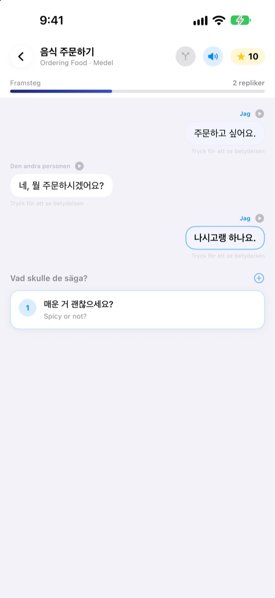
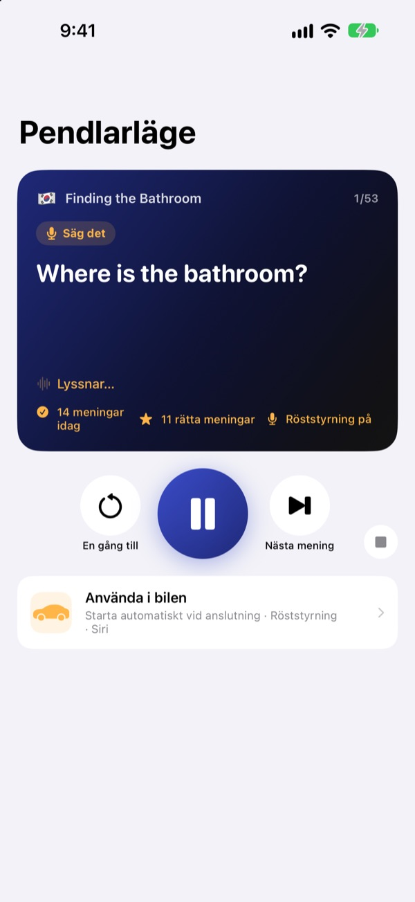
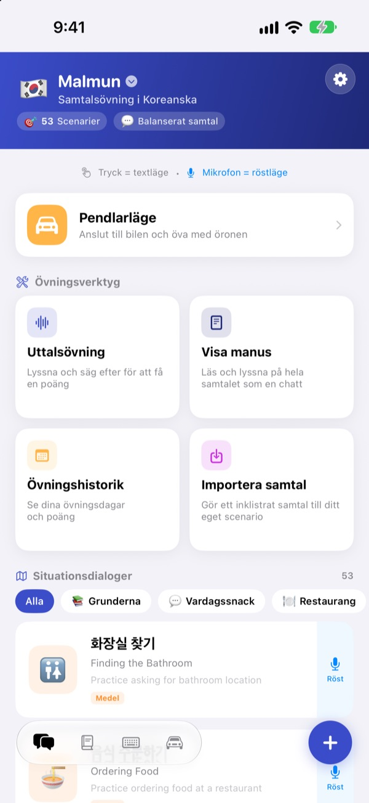
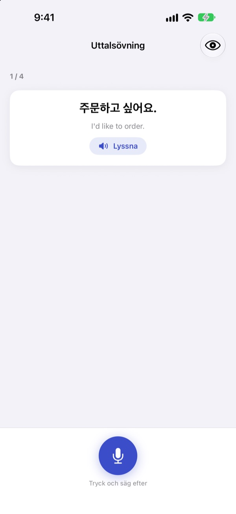

Sluta tappa orden.
Prata först.
Malmun är en samtalstränare där varje svar du väljer skickar dialogen åt ett nytt håll. Lär dig koreanska, japanska, kinesiska, spanska eller indonesiska, och öva i bilen med bara öronen och rösten.
Förgrenade samtal, uttalsövning och ordlista är gratis.

För samtalet vidare själv
Det här är ”Godmorgon”, ett indonesiskt samtal precis som det finns i appen. Varje mening du väljer tar samtalet åt ett annat håll.
Kunde frasen men inte svaret?
I läroboken följer samtalen alltid manus. I verkligheten svarar folk något du inte väntade dig. Med Malmun går du igenom alla grenar i ett samtal i förväg, så att nästa mening finns redo vad som än kommer. Till och med vägen hem blir övningstid.
Öva med öronen medan du kör
Pendlarläge spelas genom bilens högtalare via Bluetooth eller CarPlay. Först hör du betydelsen, efter en signal får du tid att säga det själv, sedan spelas svaret en gång långsamt och en gång i normal takt.
Hoppa fram och lyssna igen med rattknapparna, eller säg next, again eller slower när det är din tur. Det pausar när navigeringen ger instruktioner.

Alla situationer för resa och vardag
Varje språk har 53 situationsdialoger: grunder, vardagsprat, restaurang, att ta sig fram, flygplatsen, hotell, shopping, sightseeing och nödsituationer.
Lär du dig indonesiska finns mer: 5 handskrivna småpratsscenarier, 3 dagskurser med 6 scener var och ett veckoschema, och 100 ord för tjänsteresan.

Kolla att du sa rätt
Uttalsövningen ger dig poäng och färgmarkerar orden du fick till och dem du missade.
I manusvyn ligger hela samtalet som en chatt. Lyssna rakt igenom eller dölj betydelserna och testa dig själv.

Kom igång i tre steg
- 1
Välj språk
Tryck på flaggan högst upp på startskärmen. Fraser och ord sparas separat för varje språk.
- 2
Öppna ett samtal
Tryck på svar i textläge, eller tryck på mikrofonen och prata: röstläget hittar det svar som ligger närmast.
- 3
I bilen: Pendlarläge
Anslut iPhone till bilen och tryck på spela. Du behöver inte titta på skärmen.
Styra Pendlarläge
- Ratten: nästa spår
- Nästa mening
- Ratten: föregående spår
- Samma mening en gång till
- Spelaknappen
- Pausa och fortsätt
next·skip- Nästa mening
again·repeat- Lyssna igen
slower·faster- Ändra uppläsningstakten
next scene- Till nästa samtal
stop·pause- Sluta öva
- Siri: ”Starta pendlarövning i Malmun”
- Starta utan att röra iPhone
När appen är på svenska säger du röstkommandona på engelska. De hörs bara när det är din tur, efter signalen. Den aktuella meningen visas i bilens uppspelningsinfo. Det finns ingen egen appskärm i CarPlay.
Nästan allt är gratis. Malmun Pro låser upp resten.
Gratis
- Förgrenat småprat och dagskurser (indonesiska)
- Situationsdialoger: grunder och vardagsprat
- Pendlarläge, 3 scener per dag
- Uttalsövning, manus, importera samtal, övningshistorik
- Mina fraser, ordkort, frastangentbord
- Dela scenarier med vänner, skapa scenarier med AI
Malmun Pro
- Alla situationsdialoger: restaurang, att ta sig fram, flygplats, hotell, shopping, sightseeing, nödsituationer
- Obegränsat Pendlarläge
- Gäller alla språk
Årsprenumeration eller ett engångsköp för alltid
Priserna ser du i appen och på App Store. Årsprenumerationen förnyas automatiskt om du inte säger upp den senast 24 timmar innan perioden slutar.
Vanliga frågor
Vilka språk kan jag lära mig?
Koreanska, japanska, kinesiska, spanska och indonesiska. Knappar och menyer är på svenska, men meningarnas betydelser och röstkommandona är på engelska. Därför finns inte engelska själv i listan.
Hur använder jag den i bilen?
Anslut iPhone till bilen via Bluetooth eller CarPlay, öppna Pendlarläge och tryck på spela. Ljudet kommer ur bilens högtalare och den aktuella meningen visas under Spelas nu. Du kan också säga till Siri ”Starta pendlarövning i Malmun”, eller en gång skapa en automation i Genvägar-appen som startar när CarPlay (eller bilens Bluetooth) ansluts.
Lyssnar mikrofonen hela tiden?
Nej. Bara när det är din tur efter signalen, via iPhones mikrofon, och det den hör behandlas på enheten.
Mitt uttal känns inte igen.
Taligenkänningen körs på språket du lär dig. Prova på en lugnare plats och kontrollera att taligenkänning för det språket är nedladdad på enheten.
Hur lägger jag till tangentbordet?
Gå till Inställningar ▸ Allmänt ▸ Tangentbord ▸ Tangentbord ▸ Lägg till nytt tangentbord och välj Malmuns tangentbord. Tryck på jordgloben när du skriver för att byta. Full åtkomst behövs inte. Vill du visa färre fraser trycker du på tangentbordsikonen nere till höger på startskärmen ▸ Hantera tangentbordet.
Jag ser inte ett scenario som en vän har delat.
Delning går via iCloud, så ni behöver båda vara inloggade i iCloud. Syns det ändå inte, stäng appen helt och öppna den igen.
Vad behövs för att skapa scenarier med AI?
Lägg in din egen Anthropic-API-nyckel i appen och skriv ett ämne, så skapas ett nytt samtal. Allt annat fungerar utan nyckel.
Hur säger jag upp eller får pengarna tillbaka?
Betalningar sköts av Apple. Säg upp i iPhones Inställningar ▸ Apple-konto ▸ Prenumerationer ▸ Malmun. Återbetalning begär du hos Apple på reportaproblem.apple.com.
Ny iPhone och Pro är borta.
Logga in med samma Apple-konto och tryck i Malmun på Inställningar ▸ Malmun Pro ▸ Återställ köp.
Var sparas mina framsteg?
Inget konto behövs. Dina data stannar på enheten och i din egen iCloud. Ingen reklam, ingen spårning, bara anonym användningsstatistik och felrapporter. Buggar och önskemål tas också emot på GitHub Issues (github.com/M1zz/IndonesianSmallTalk/issues).
Frågor eller synpunkter? Mejla leeo@kakao.com, använd Inställningar ▸ Skicka feedback i appen eller hör av dig på Instagram: @lee25_ios.